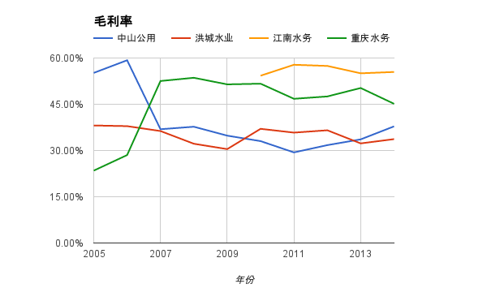
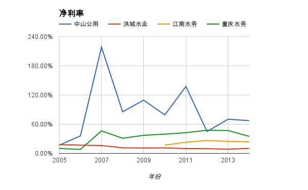
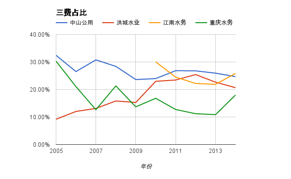

护城河¶
无形资产¶
水务行业作为公共服务行业，特许经营权是最大的无形资产。建设-运营-移交（BOT）模式里面，一般企业获得设施的特许经营权20～30年，之后再续约或者移交给地方政府管理。如果政府只是给与某上市公司水厂的特许经营权，而没有包含供水网络和销售的特许经营权，当政府引入新的投资方建设新水厂时，就不存在争议。而如果这个上市公司获得了制水、运水、售水的全流程垄断，即使政府想引入新的投资者，也需要额外支付费用，来获得输水管道的使用权。
| 特许经营权 | 供水 | 输水 | 售水 | 污水处理 |
| 中山公用 | 全市（除三个乡镇）- 2039 | 全市（除三个乡镇）- 2039 | 全市（除三个乡镇）- 2039 | 城区-2037 |
| 洪城水业 | 无，但构成事实永续 | 无，但构成事实永续 | 无，但构成事实永续 | 省内78个县市20～30年 |
| 江南水务 | 全市-2040 | 全市-2040 | 全市-2040 | 少量，正在收购中 |
| 重庆水务 | 城区-2037 | 城区-2037 | 城区-2037 | 城区-2037 |
在大家的常规印象中，水务公司应该是有自然垄断的优势，其实仔细分析却发现这比较微妙
- 垄断优势存在
水厂和污水处理厂一旦建设，只要供水能力和处理能力能满足区域需求，那么政府一般情况下不会继续建设。所以谁取得了一个新的水厂和污水处理厂的特许经营权（一般是20～30年），就确立了这段时间的垄断优势。
- 地方壁垒存在，但在逐渐消失
传统的水厂等公共服务的设施一般是由当地水利部门下属的子公司负责建设、运营。随着国家颁布的《水十条》“PPP” “BOT”等政策，开放水务市场，鼓励社会资本投资水务行业。在分析中，一个典型的例子是洪城水业。它的供水业务在南昌的市场上占有绝对主导地位，但是污水处理业务却被中外合资的其他企业打的落花流水，持有的86个污水处理厂是分布在江西省其他县市，所以既是受害者，也是受益者。反观其他几个水业公司，基本上是传统模式，业务也只是局限在当地。
- 外资进入，内资拼杀
由于国家开放了水务行业，所以外资和内资都竞争非常激烈。像2002年德国柏林水务公司和北京城建公司合资建设运营青山湖污水处理厂, 2005 年进入的桑德集团有限公司建设运营南昌市象湖污水处理厂项目，2005 年进入的新加坡亚洲环保控股有限公司负责投资建设运营红谷滩污水处理厂。
所以综合来看，简单的说有垄断优势不太准确。就像一个蛋糕，现在还处在切蛋糕的阶段，切完了就可以慢慢吃，吃上个20，30年，中间就没人能抢走你的了。
转换成本¶
除了政府的行政垄断（特许经营权），水务行业也符合事实上的垄断优势。即使没有行政垄断，一个地方如果供水或者污水处理的需求得到了满足，重新建立新水厂，铺设新的输水网络也不具有足够的经济价值。基础设施的投入导致转换成本过高。但这实际上也牵涉到前面的特许经营权的问题，上市公司应该尽量获得全流程的特许经营权，这样会增加政府的转换成本。从终端用户的角度来看，一般当地都只有一个自来水供应商，不具有选择或者转换的权利。未来即使可以选择，预计和电、燃气、银行、保险等行业一样，换一家服务商可能会比较麻烦，有一定的转换成本的护城河优势。
成本优势¶
水务行业具有超强的地理局限，一个水厂负责供应周围区域的供水和污水处理。供水网络太远会导致网络末梢的居民水压不够，需要额外增加水泵才能正常用水。过远的运输往往也会增加网络损耗，进一步造成浪费。
每个水厂/污水处理厂由于取水方式、原水水质、处理工艺等不同，可以导致成本上的差别，尤其是电费、原材料的差别。而同时自动化程度的高低，也会影响人工的费用。所以不同的公司之间，成本差别是存在的。简单的比较成本没有意义，在这里我们比较每吨水的生产成本和处理成本，以及当地的水价。这样来看公司的成本是否有优势。
毛利率¶
水务行业有诱人的利润率，供水业务的毛利率普遍在30%左右，污水处理的毛利率普遍在40%左右，如下图所示，相比之下，不同公司之间的毛利率还是有差别的。先比较一下供水和污水处理这两个不同业务之间的差别。可以看到，除了江南水务在供水方面有较高毛利率之外，其他三个公司污水处理的毛利率都要远高于供水业务的毛利率。重庆水务的污水处理的营业收入是供水业务的三倍，所以拉高了整体的毛利率。
| 总毛利率 | 供水毛利率 | 污水处理毛利率 | |
| 中山公用 | 38.95% | 23.94% | 42.54% |
| 洪城水业 | 35.04% | 36.92% | 39.92% |
| 江南水务 | 56.14% | 53.19% | 68.75% |
| 重庆水务 | 45.10% | 28.97% | 67.14% |
净利率¶
毛利率高并不能保证净利率也高，即使在水务这种传统的行业。如下图所示，中山公用和重庆水务的净利润要明显高于洪城水业和江南水务。毛利率与净利率之间的差别主要是由三费决定的。中山公用和重庆水务的优势在于较少的销售费用和财务费用，洪城水务的财务费用过高（占营业收入的13%）。从三费占比的角度上看，中山公用和重庆水务展现了成本上的护城河优势，洪城水务如果债务还清则可以将净利率由现在的10%提升至20%以上，不过距离重庆水务和中山公用还有一定差距。中山公用优异的净利率也同时得益于占营业收入30%的市场租赁和客运业务，这两个业务都有接近50%的净利率。
面对上表， 为什么江南水务的供水毛利率如此高？这个差别是因为成本的差别还是水价的差别？
江南水务的自来水业务毛利率高有两个原因：
- 生产成本低，下面的表比较了四个企业生产每吨自来水的成本，江南水务最低。对比成本组成，发现江南水务的成本节约主要在耗电量和人工。
- 非居民用水占的比重高。即使生产成本低，但江阴市的居民用水价格不高，之所以有较高毛利率，还得归功于当地发达的第二产业，提高了非居民用水的比例。这里也对比了这四家公司里面居民生活用水和非居民用水的比例，发现除了洪城水业，其他三家的非居民用水基本占总供水量的70%。洪城水业仅占23%。但中山市和重庆市的非居民用水和居民用水的价格差距不大，所以没有太大的提升毛利率。
| 单位（亿吨） | 居民生活用水 | 非居民生活用水 | 非居民用水比例 |
| 中山公用 | 1 | 2.6 | 72% |
| 洪城水业 | 2.36 | 0.7 | 23% |
| 江南水务 | 0.74 | 1.76 | 70% |
| 重庆水务 | 0.9 | 2.2 | 71% |
同时，为什么重庆水务和江南水务的污水处理毛利率这么高？
- 江南水务的污水处理毛利率高仅作为参考，因为去年污水处理的营业收入只有1600万，成本500万，比其他的几个公司的污水处理业务规模差距太大，不具有可比性。
- 重庆水务的污水处理费虽然是1～1.3元/吨，但实际上公司是和重庆市政府结算，结算价格为2.78元/吨，这使公司的污水处理毛利率非常可观。
| 每吨自来水生产成本 | 每吨自来水价格 | 每吨污水处理成本 | 每吨污水处理价格 | |
| 中山公用 | 1.01 | 1.4～3 | 0.63 | 0.8～1 |
| 洪城水业 | 0.94 | 1.58～7.9 | 0.73 | ～0.9 |
| 江南水务 | 0.84 | 1.06～2.82 | 0.42 | 1.3～1.4 |
| 重庆水务 | 2.3 | 2.5～3.25 | 1 | 1～1.3（实际2.78） |
上面的表格也显示，重庆水务的自来水生产成本远远高于其他公司，通过比较成本的构成，发现主要差别在电费。同样制作3亿吨水，洪城水业只支付了6千万的电费，而重庆水务则支付了2.3亿元，这直接导致了每吨自来水价格高出0.8元。同时重庆水务的折旧费用也远远高于其他公司。这可能是因为其他几个城市的城镇化水平较高，于是水厂较为集中，而重庆人口分布较为分散，导致水厂数量多，固定资产大，于是折旧较高。
三费占比¶
从下图中可以看到，重庆水务的三费明显比其他三个公司低。一方面是因为规模优势，平摊到单位营业收入的管理和销售成本就低，另一方面是资金优势，充沛的现金流允许公司委托理财或者贷款，无需支付财务费用反而有收入。
相比之下，洪城水业的财务费用却是逐年上升，主要是最近几年负债较高，承担的财务费用就占营业收入的近10%。
